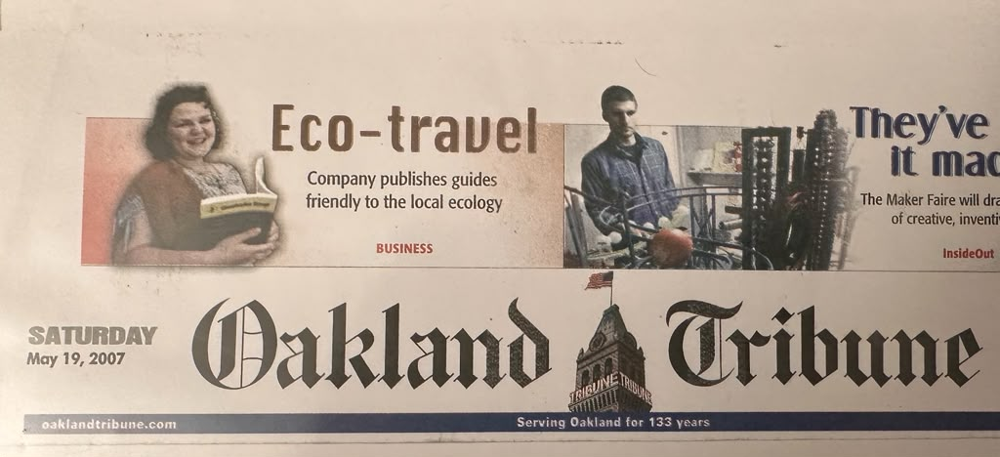
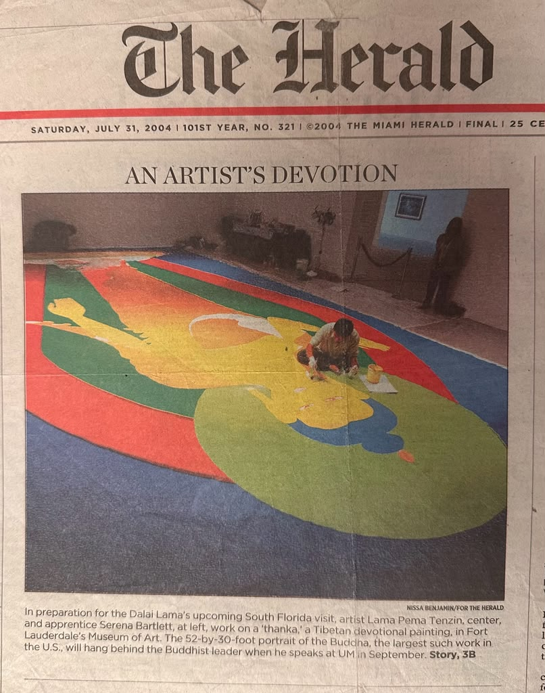
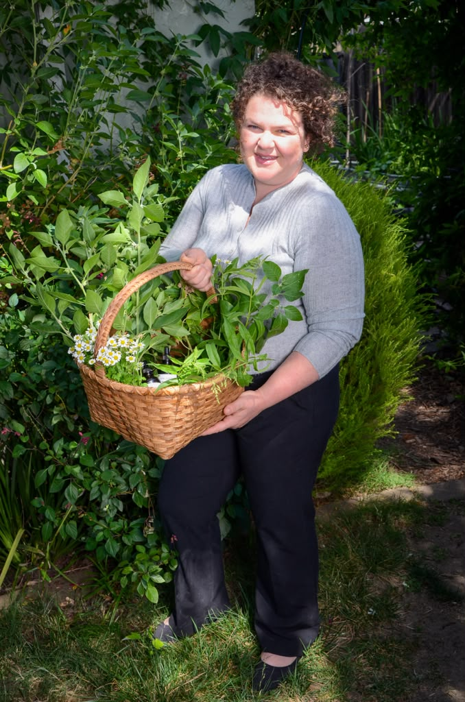

Author, GrassRoutes Travel
Founder of GrassRoutes and author of a series of urban eco guidebooks — Portland, Oakland & Berkeley, San Francisco, Seattle, and Northern California Wine Country — championing sustainable, local travel.
About Living Terrain
A line of clinician-crafted botanical extracts, born from a physician's curiosity and a deep respect for traditional healing.
The founder
Serena Ling, PA-C is a board-certified Physician Assistant with a unique background that bridges conventional medicine and traditional healing practices. Her clinical experience includes oncology, surgery, family medicine, emergency medicine, and clinical research, alongside years of study in herbalism, Tibetan medicine, nutrition, and medicinal mushrooms.
She is the founder of Living Terrain, where she formulates clinician-created botanical extracts using carefully sourced mushrooms, synergistic herbs, and evidence-informed extraction methods. Her passion is translating both scientific research and traditional wisdom into practical tools that empower people to improve their health safely and confidently.
Her classes are engaging, approachable, and grounded in both modern medical evidence and centuries of traditional herbal knowledge.
Learn with SerenaHer path
Serena's route to medicine ran through writing and traditional art — earlier chapters that still shape how she bridges conventional care and traditional healing. (Her earlier work was published under the name Serena Bartlett.)

Founder of GrassRoutes and author of a series of urban eco guidebooks — Portland, Oakland & Berkeley, San Francisco, Seattle, and Northern California Wine Country — championing sustainable, local travel.

Studied Tibetan devotional (thangka) painting, apprenticing to Bhutanese artist Lama Pema Tenzin on a large Shakyamuni Buddha work for the Dalai Lama's 2004 University of Miami visit — a thread that ties directly to her study of Tibetan medicine.
The Living Terrain philosophy
Your body is a living terrain — an ecosystem you tend for long-term vitality, preventing the imbalances that lead to illness.
Knowledge that empowers your self-care — so you understand what you take and why.
Browse classes →Step away from daily demands and build the habits that carry vitality forward.
Explore retreats →A six-step, six-month extraction with synergistic ingredients for absorption — gentle immune modulators safe for daily use.†
See the extracts →What we stand for
Six steps.·Six months.·Maximum extraction.

From the garden
Many of the botanicals in Living Terrain are grown and gathered fresh — harvested at their peak and taken straight into the extraction process. It's a slower way of working, and a more honest one: you can trace what's in the bottle back to the soil it came from.

Heritage
The line began as hand-labeled, spore-to-bottle blends — small batches made with intention — before becoming the clinician-crafted collection it is today. The scale has grown; the care hasn't changed.
Explore the extracts† These statements have not been evaluated by the Food and Drug Administration. This product is not intended to diagnose, treat, cure, or prevent any disease.